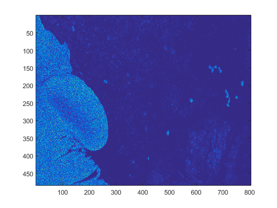
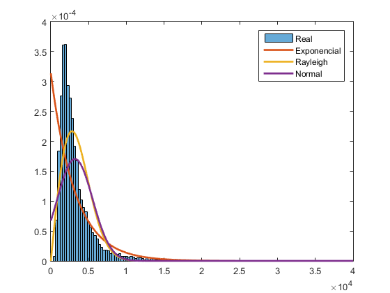
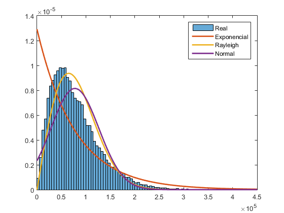
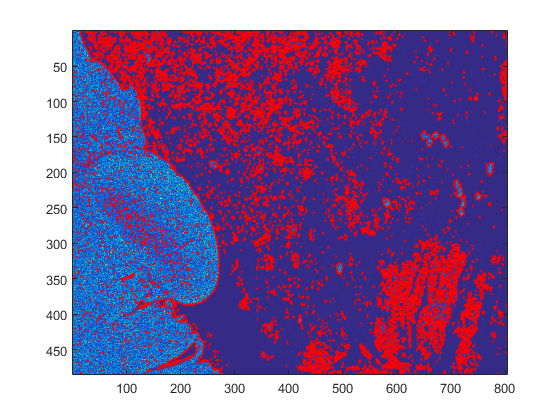
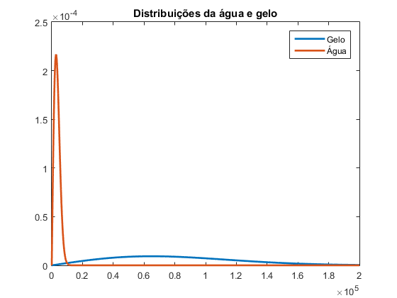
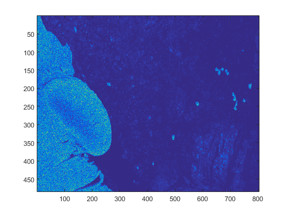
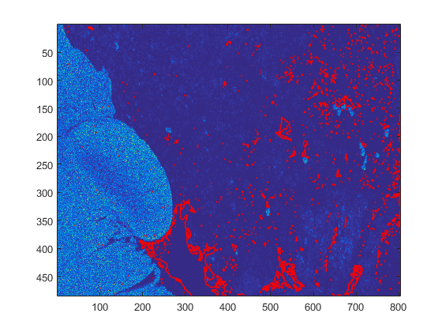
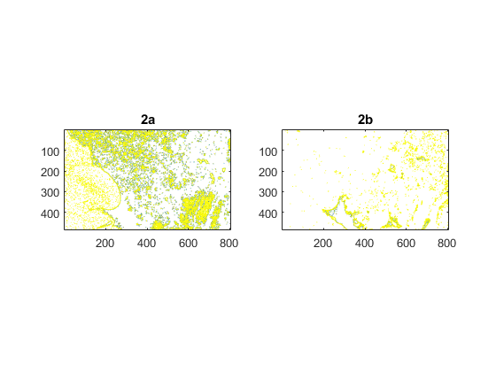

Contents
%%%%%%%%%%%%%%%%%%%%%%%%%%%%%%%%%%%%%%%%%%% % Quinto trabalho de laboratório de PDS % 2020/2021 % % Turno de 3ªfeira 14h % % Grupo 38 % João Silva 90803 % Vasco Araújo 90817 %%%%%%%%%%%%%%%%%%%%%%%%%%%%%%%%%%%%%%%%%%% close all; clear;
1a
Em anexo no pdf estão as deduções para cada uma das distribuições.
1b
load('sar_image.mat'); figure; imagesc(I); % getrect()
1c
%Secções com apenas gelo e com apenas água zona_gelo = [1 90 73 395]; zona_agua = [602 1 203 93]; I_gelo = imcrop(I, zona_gelo); I_agua = imcrop(I, zona_agua); %Resize de matriz para vetor I_gelo = reshape(I_gelo,1,[]); I_agua = reshape(I_agua,1,[]); %Calcula os parâmetros para as distribuições diferentes %Exponencial gelo_exp = mle(I_gelo, 'distribution','Exponential'); agua_exp = mle(I_agua, 'distribution','Exponential'); %Rayleigh gelo_ray = mle(I_gelo, 'distribution','Rayleigh'); agua_ray = mle(I_agua, 'distribution','Rayleigh'); %Normal gelo_norm = mle(I_gelo, 'distribution','Normal'); agua_norm = mle(I_agua, 'distribution','Normal');
Comentário Usando a função "mle" do Matlab obtivemos os mesmos resultados do que fazendo as contas com as expressões obtidas em 1a, como seria de esperar.
1d
%Água %plot do histograma figure; histogram(I_agua, 'Normalization', 'pdf'); x = 0:1:4*10^4; hold on; plot(x, exppdf(x, agua_exp),'LineWidth',2); plot(x, raylpdf(x, agua_ray), 'LineWidth',2); plot(x, normpdf(x, agua_norm(1), agua_norm(2)), 'LineWidth',2); legend('Real', 'Exponencial', 'Rayleigh', 'Normal'); figure; histogram(I_gelo, 'Normalization', 'pdf'); x = 0:1:4.5*10^5; hold on; plot(x, exppdf(x, gelo_exp), 'LineWidth',2); plot(x, raylpdf(x, gelo_ray), 'LineWidth',2); plot(x, normpdf(x, gelo_norm(1), gelo_norm(2)), 'LineWidth',2); legend('Real', 'Exponencial', 'Rayleigh', 'Normal'); 
Comentário Observando as curvas obtidas com as várias distribuições, consegue-se chegar à conclusão que a distribuição que melhor descreve este conjunto é a de Rayleigh.
2a
%Using the Rayleigh distribution I_segmented = I; thresh = raylpdf(I, agua_ray) - raylpdf(I, gelo_ray); I_segmented(thresh>=0) = 0; %é agua I_segmented(thresh<0) = 1; %é gelo figure; imagesc(I); hold on; imcontour(I_segmented, 'r'); figure; x = 0:1:200000; plot(x, raylpdf(x, gelo_ray), x, raylpdf(x, agua_ray), 'LineWidth',2); title('Distribuições da água e gelo'); legend('Gelo', 'Água'); 
Comentário Vamos agora à imagem original e para cada pixel verificamos se tem um valor maior com a distribuição do gelo ou com a distribuição da água. O que for maior assumimos que esse pixel pertence a essa zona. Vemos na imagem o resultado desta operação, em que 0 corresponde a água e 255 corresponde a uma zona de gelo. Fazendo o plot das 2 distribuições vê-se que a mudança entre dizer que um dado pixel é de uma zona de gelo ou de uma zona de água acontece quando esse pixel tem valor de 10000. Abaixo disso dizemos que o pixel é de uma zona de água, acima dizemos que é de uma zona de gelo. Como se pode ver as secções de água e gelo estão bem definidos, sendo que há no entanto bastantes falsos positivos (secções mal divididas).
2b
kernel = [5,5]; I_conv = conv2(I,kernel,'same'); figure; imagesc(I_conv); thresh = raylpdf(I_conv, agua_ray) - raylpdf(I_conv, gelo_ray); I_conv(thresh>=0) = 0; %é agua I_conv(thresh<0) = 1; %é gelo figure; imagesc(I); hold on; imcontour(I_conv, 'r'); 
Comentário Ao passar a imagem por um filtro antes de fazer o mesmo processo que na alinea anterior vemos que muitos dos falsos positivos são eliminados. No entanto, como a imagem contém poucas secções de apenas água, o resultado desta alinea apresenta muito menos zonas, sendo que as zonas delimitadas que apresenta são quase guarantidamente apenas de um tipo (apenas água ou apenas gelo).
2c
figure; subplot(1,2,1); imcontour(I_segmented); title('2a'); subplot(1,2,2); imcontour(I_conv); title('2b'); %alinea 2a correct_2a_agua = 0; correct_2a_gelo = 0; I_gelo = imcrop(I_segmented, zona_gelo); I_agua = imcrop(I_segmented, zona_agua); correct_2a_agua = correct_2a_agua + sum(sum(I_agua==0)); correct_2a_gelo = correct_2a_gelo + sum(sum(I_gelo==1)); total_a_agua = correct_2a_agua/(size(I_agua,1)*size(I_agua,2)); total_a_gelo = correct_2a_gelo/(size(I_gelo,1)*size(I_gelo,2)); %alinea 2b correct_2b_agua = 0; correct_2b_gelo = 0; I_gelo = imcrop(I_conv, zona_gelo); I_agua = imcrop(I_conv, zona_agua); correct_2b_agua = correct_2b_agua + sum(sum(I_agua==0)); correct_2b_gelo = correct_2b_gelo + sum(sum(I_gelo==1)); total_b_agua = correct_2b_agua/(size(I_agua,1)*size(I_agua,2)); total_b_gelo = correct_2b_gelo/(size(I_gelo,1)*size(I_gelo,2)); Acertos = {'Água'; 'Gelo'}; Metodo1 = [total_a_agua; total_a_gelo]; Metodo2 = [total_b_agua; total_b_gelo]; T = table(Acertos, Metodo1, Metodo2) % disp
T =
Acertos Metodo1 Metodo2
_______ _______ _______
'Água' 0.97498 0.0168
'Gelo' 0.98289 0.99983
 Comentário Como se pode ver pelo rate de escolhas correctas, ambos os métodos são bastante bons a estimar as duas zonas da imagem. No entanto o método da alinea 2a dá resultados significativamente melhores no rate das escolhas correctas relativas à zona de água. Isto é devido ao facto que a zona original escolhida não possuí apenas água, contendo também gelo que é apenas detetado depois de passar a imagem pelo filtro da alinea 2b. Foi assim escolhida uma nova zona e repetida esta alinea abaixo.
%alinea 2a correct_2a_agua = 0; correct_2a_gelo = 0; I_gelo = imcrop(I_segmented, zona_gelo); I_agua = imcrop(I_segmented, [262 372 44 78]); correct_2a_agua = correct_2a_agua + sum(sum(I_agua==0)); correct_2a_gelo = correct_2a_gelo + sum(sum(I_gelo==1)); total_a_agua = correct_2a_agua/(size(I_agua,1)*size(I_agua,2)); total_a_gelo = correct_2a_gelo/(size(I_gelo,1)*size(I_gelo,2)); %alinea 2b correct_2b_agua = 0; correct_2b_gelo = 0; I_gelo = imcrop(I_conv, zona_gelo); I_agua = imcrop(I_conv, [262 372 44 78]); correct_2b_agua = correct_2b_agua + sum(sum(I_agua==0)); correct_2b_gelo = correct_2b_gelo + sum(sum(I_gelo==1)); total_b_agua = correct_2b_agua/(size(I_agua,1)*size(I_agua,2)); total_b_gelo = correct_2b_gelo/(size(I_gelo,1)*size(I_gelo,2)); Acertos = {'Água'; 'Gelo'}; Metodo1 = [total_a_agua; total_a_gelo]; Metodo2 = [total_b_agua; total_b_gelo]; T = table(Acertos, Metodo1, Metodo2)
T =
Acertos Metodo1 Metodo2
_______ _______ _______
'Água' 1 0.97609
'Gelo' 0.98289 0.99983
Comentário Como se pode ver, com a zona de água escolhida corretamente os valores obtidos com o método da alinea b melhora significativamente. Assim determinamos que para o segundo método é mais importante obter uma clara divisão entre as várias zonas na imagem original. Em geral ambos os métodos deram resultados aceitáveis.